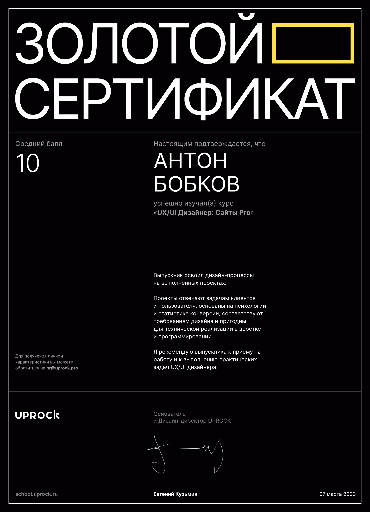

Сертификат Websites PRO

Нажмите на изображение для просмотра в полном размере. Плюс и минус меняют масштаб, ноль показывает сертификат целиком.

Нажмите на изображение для просмотра в полном размере. Плюс и минус меняют масштаб, ноль показывает сертификат целиком.